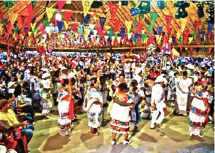

Brief history of Cozumel

Originally, the Mayans were established in Guatemala, fifteen centuries before Christ. Their culture and influence then extended to the entire south: Mexico, Belize, Honduras, and El Salvador. In 200 ac, they began to build cities in the Yucatan Peninsula.
The advanced Mayan culture hit its peak from the VII century until the IX century. They considered Cozumel to be a sacred sanctuary and called it “Cuzaam Luumi” which means land or place of the swallows. They later shortened these
two words to “Cuzamil”. When the Spanish arrived, the name adapted phonetically from “Cuzamil” to “Cozumel”.
Plan Your Tour:
Ride along the beach
Enjoy a ride in any of the beautiful beaches the island has. We suggest you 'Palancar Beach'. It is one of the best all-around beach spots on Cozumel, is especially acclaimed for its water sports. So, once you get there, you could also enjoy any of these,
including kayaking, snorkeling, sailing and diving.
You can rent a dive charter and also grab some grub at the nearby restaurants and bars. Travelers especially recommend Palancar Beach and Palancar Reef for cruise patrons looking to escape a pre-planned excursion for a more authentic
experience.
Discover Mexico Park
If you don't have the time to see all of Mexico's sites, go to Discover Mexico Park! It houses miniature models of some of the country's most popular attractions, including the Mayan ruins of Tulum and the Metropolitan Cathedral of Mexico City.
The park also provides insight into Mexican culture, including a chocolate factory and the popular tequila tasting exhibit. This is a great option if you're short on time, but still want to see and learn a lot about Mexico.
If
youwant to know more, go to
https://www.discovermexicopark.com
San Gervasio Ruins
The San Gervasio ruins have a history which dates back to 100 BC and extends through to the 16th century. This is around the time when the Maya are first thought to have settled in Cozumel. Ancient Classic Olmec artefacts have also been found
in more recent archaeological excavations. It is believed that Cozumel Island was a site sacred to the Ix Chel (Mayan for “She of the rainbows”), the Mayan moon goddess, said to be the deity of midwifery, fertility, medicine and weaving.
In the past, many women, from mainland Mayan settlements, made a pilgrimage here to Ix Chel’s shrine in order to receive spiritual healing and be blessed with and in childbirth. Today, you can pay a tribute of your own by taking a brief
tour of this ruin; it costs $9.50 to access the park. Most grumble about the cost of admission, but previous guests do recommend you take some time to visit San Gervasio if you have never seen Mayan ruins up close.
If you want to
know more, go to
Cozumel Tours.
Faro Celerain Eco Park
The Faro Celerain Eco Park, it's a beautiful place to know more about Cozumel's nature. Its 2,500 acres are home to exotic birds, crocodiles and sea turtles. It also has two lighthouses, one of which hails from the pre-Hispanic era. There's
also a museum that details the history of the Maya, as well as pirates and corsairs that once frequented the area. You can also book a catamaran tour of the Colombia lagoon. Recent visitors said that the beach park offers a great mix of
history and nature situated in a beautiful spot. The white sands and peaceful atmosphere of the beach are just about perfect, according to most visitors.
If you want to know more, go to the
Park's site.
El Cedral Festival

There is Story behind the El Cedral Festival held annually in Cozumel. It started as the Festival of Santa Cruz de Sabán over 166 years ago. `In 1847 the Mayans went to war in the Yucatan Peninsula in what was is known as the Caste War. The
festival of El Cedral that takes place in Cozumel annually began as the religious festival, “Santa Cruz de Sabán.”
El Cedral is one of the oldest parties not only in Cozumel but throughout Mexico. It takes place in late April and
early May; during those dates there are, among other activities, tastings of typical food and drinks, folk dances of the region, pilgrimages and mechanical games are placed.
Carnival
Due to its age and magnitude, it is one of the most important carnivals in Mexico. The first Carnival that took place in Cozumel was in 1874 and has remained alive without interruption over the years. This important holiday includes the coronation of
kings and queens of the carnival, parades of floats, dance troupes dressed in costumes, costumes and original masks; concerts and the traditional 'Burning of Juan Carnaval' to culminate the celebration. Visit Cozumel during one of its
famous festivities and know its Caribbean vibe and festive atmosphere, it will undoubtedly be an experience you will never forget!